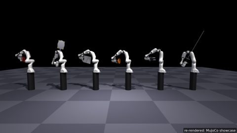
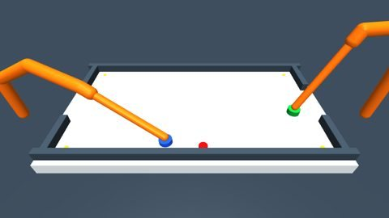
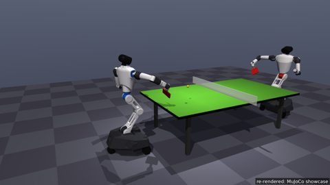
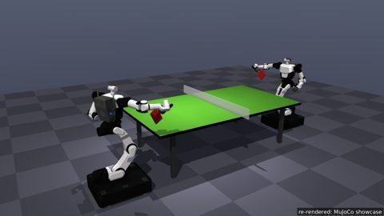
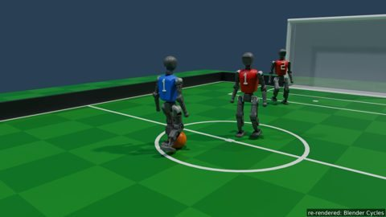
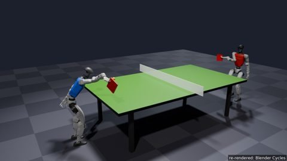
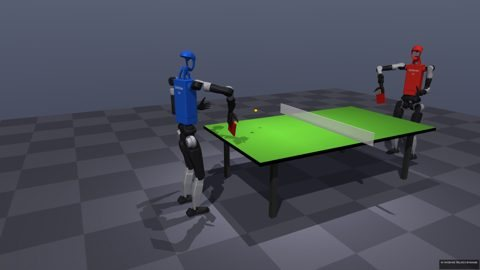
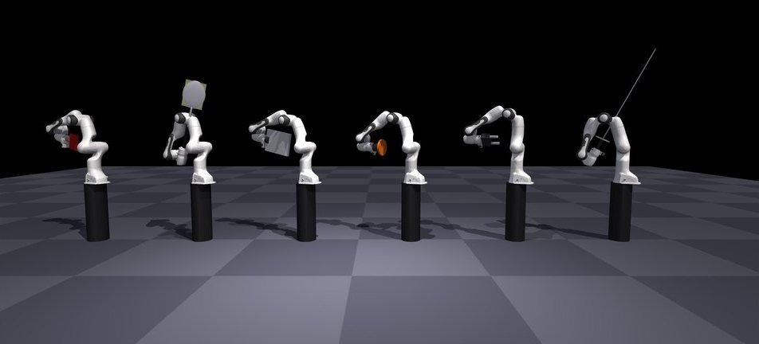

Planned
Franka Research 3 (FR3)
armPlanned
Sports today
No current task uses it yet.
Limits only; no model file in the library.
A shared robot library with real-robot limits from vendor sources.
Today's tasks use Franka Panda, KUKA iiwa 14 and Booster T1 plus purpose-built machines.
No current task uses it yet.
Limits only; no model file in the library.



No current task uses it yet.

No current task uses it yet.

The soccer sport's own model, with the released walking policy.

No current task uses it yet.

No current task uses it yet.
Real limits come from vendor sources (product pages, SDKs, URDFs); where a value is not published it is marked as an estimate or as not published, with the reason.
Each shot is a release command with declared scatter.

Every body obeys the real robot's joint position, velocity and acceleration limits; where the vendor SDK and the URDF disagree, the SDK wins; unpublished values are marked as estimates. Platform skills and scripted opponents obey the same limits.
Held to real-robot limits: the rule of the benchmark.
Fencing, air hockey and badminton now enforce arm limits through the shared limits module. Table tennis and tennis have joint-target range and speed checks; their arm controllers do not yet use that module.
Air hockey uses KUKA joint ranges, velocities and torques, Air Hockey Challenge acceleration limits, and estimated jerk limits. A KUKA torque-rate limit is not published and is not enforced.
Before a sport-and-body pair counts, an upper-bound player that knows the true state must be able to do the sport's basic actions under real limits (racket sports: return at least 90% of legal serves). Pairs that fail change the setting or move to a challenge track.
The same table-tennis match runs on Franka (fixed and on a rail), Rainbow RB-Y1, Galaxea R1 Pro, Unitree G1 and Unitree H1-2.
Body-swap results are a research variant, reported separately and never mixed into the standard results table.
Prototype · Preliminary: the legged bodies won 0 of 20 model matches in this table-tennis pilot (n = 20 model matches).
The physics engine is fixed per sport: MuJoCo, pooltool, or a validated sport-specific model, because changing it changes the match. Renderers are plug-ins (MuJoCo, Blender Cycles, Isaac Sim RTX), and every match replays bit-exactly, so any match can be re-rendered.
MuJoCo (default), MuJoCo with shadows and multisampling; billiards draws with its own pinhole renderer.
Blender Cycles (path tracing), Isaac Sim RTX.
For spectators a sport can dress its match scene with the robot's fine visual meshes. The kinematics are checked to be identical before a frame is drawn.